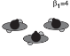

Formation en V:
Les foules humaines s'auto-organise, pour mieux les comprendre, il a fallu comprendre comment elle se déplaçait en groupe, car 70% des gens composant une foule marchent en groupe avec des amis, de la famille, des collègues...
Cependant l'impact de ces groupes est majoritairement méconnu dans la dynamique d'une foule. Ainsi Mehdi Moussaïd a cherché à en savoir plus sur ces groupes et à comprendre leurs motivations, leurs déplacements, leurs organisations
et pleins de choses passionantes pour les gens qui adorent comme moi l'étude des foules, mais je divague passons à l'expérience.
Protocole
Cette expérience tente de trouver les mystères se cachant dans ces groupes, pour se faire ils ont étudié 1500 groupe de piétons dans des conditions naturelles. Ils ont ainsi étudié des videos filmant des lieux publiques, cela a permis
d'étudier les groupes dans des conditions différentes, soit une densité élévée de piétons soit une faible densité. Une fois ces données récupéré, il a pu observer
comment agissait les groupe constitué de 2 à 4 membres. Leur modèle montre ainsi comment un individu interagit avec les autres membres du groupe et avec les autres piétons.
Résultats et Impacts

Les observations, ont révélé que pour une faible densité, les groupes avaient tendance à former une ligne, mais plus la densité du groupe augmente, plus la ligne se transforme en "V". Cela s'explique par le faite que les humains formant
le groupe, souhaitent commniqués avec les autres membres du groupe. Or la formation en V permet de facilité les interactions socials entre les membres du groupe. Cependant cette formation en V réduit la vitesse du groupe, d'une valeur estimé
à 17%, car si la plupart des animaux se forment en V avec la pointe vers l'avant, c'est car ça facilite l'aérodynamisité et la vitesse, cela est observable pendant les migrations d'oiseaux, les cyclistes, les marathoniens courant avec des lièvres...
Ainsi quand la densité de la foule augmente, les groupes font un compromis entre vitesse et échanges sociaux. Cette expérience permet de montrer que la dynamique des foules n'est pas seulement déterminé par des contraintes physiques mais elle
est aussi influencer par la communication et les échanges entre les personnes qui la forme.
Chercheur et lien pour en savoir plus:
Chercheur (+livre et thèse) : Mehdi Moussaïd
Article scientifique : Google Scholar